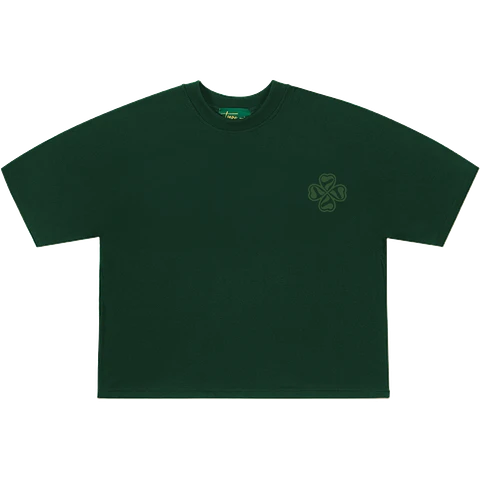
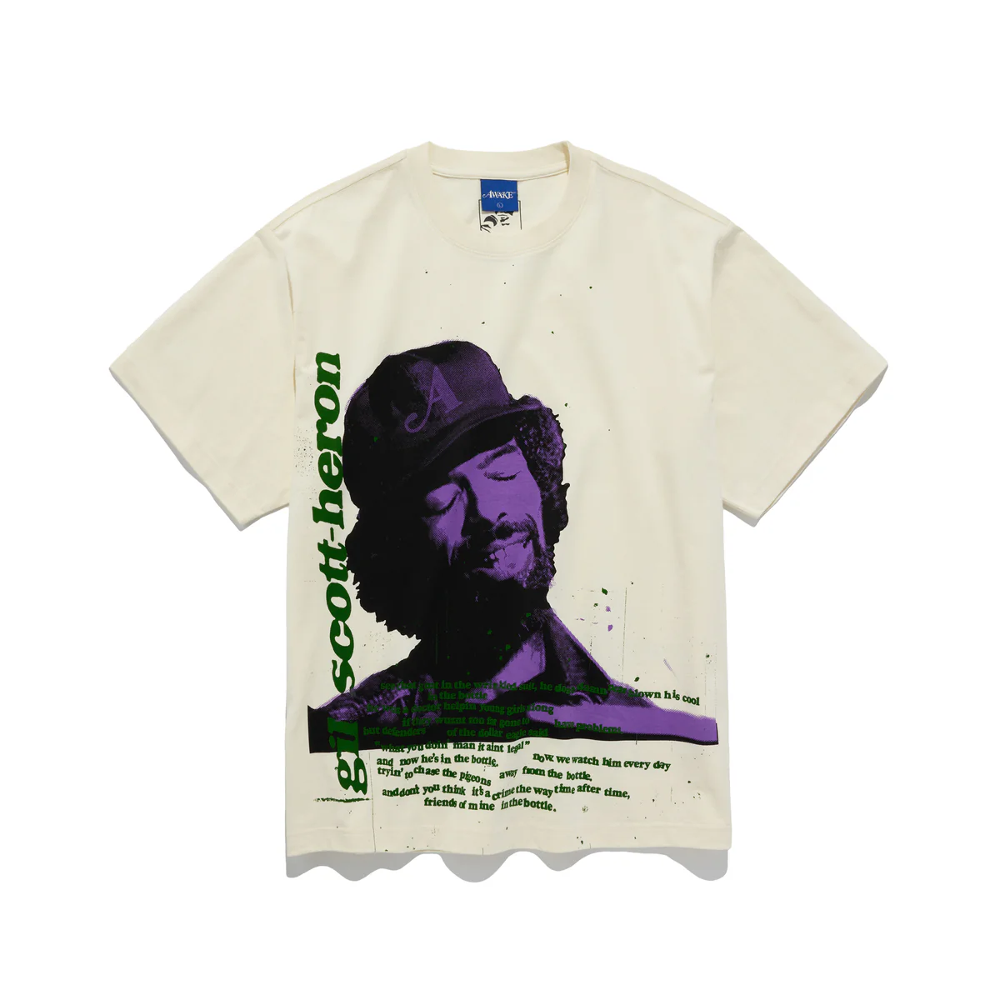

El Futuro no Es Verde. Es Complejo. Y lo estamos construyendo.

Una visión audaz donde la naturaleza prospera y la mente humana trabaja por el bien común.
Nuestra Postura
En SolarpunkFTZY, no buscamos la utopía fácil, sino la realidad posible. Abrazamos la sostenibilidad con un análisis crítico de sus matices, promoviendo el respeto y la apreciación genuina por la naturaleza, impulsados por una profunda filosofía de coexistencia.
Objetos para la Resistencia
Camiseta Orgánicamente Cínica

Estilo Consciente
Gorro "Consumo Consciente... ¿o no?"

Merchandising
Porque vestirse también es una declaración

"Análisis profundos y noticias sobre sostenibilidad real, sin filtros ni greenwashing."Últimas Reflexiones